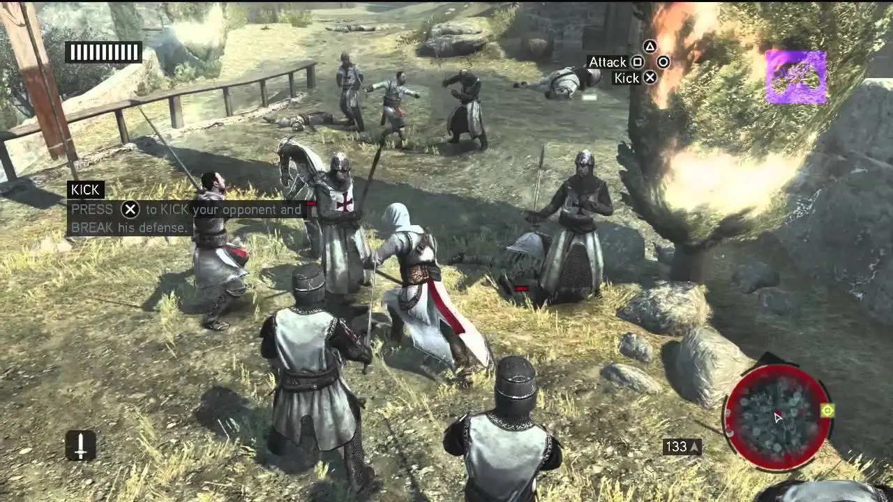

Assasin$ Creed
Assasin$ Creed

Jugabilidad y Mecánicas de Assassin's Creed: Las mecánicas de juego en Assassin's Creed son fundamentales para crear una experiencia de juego inmersiva. Desde el sigilo hasta la acción frenética, el mundo abierto y las misiones intrigantes, la franquicia ofrece una gama diversa de elementos que hacen que los juegos sean únicos. A continuación, profundizaremos en las mecánicas clave, el mundo abierto, las misiones y las características distintivas de Assassin's Creed, además de ofrecer algunos consejos para aprovechar al máximo tu experiencia de juego. Mecánicas Clave: Sigilo y Parkour: La combinación de sigilo y habilidades de parkour permite a los jugadores moverse con fluidez a través del entorno y eliminar objetivos de manera sigilosa. Combate: El sistema de combate de Assassin's Creed es dinámico y permite a los jugadores enfrentarse a múltiples enemigos con movimientos fluidos y letales. Mundo Abierto: Exploración: Los juegos de Assassin's Creed suelen ofrecer mundos abiertos impresionantes que invitan a la exploración. Descubre ciudades históricas, paisajes naturales y estructuras icónicas. Sincronización: Sincroniza puntos de vista desde torres o edificios altos para desbloquear áreas del mapa y planificar tus rutas. Misiones: Misiones Principales y Secundarias: Sumérgete en una narrativa rica a través de misiones principales y completa misiones secundarias para ganar recompensas y profundizar en la historia. Asesinatos y Objetivos: Muchas misiones implican asesinatos sigilosos o infiltraciones para alcanzar objetivos. Características Distintivas: El Animus: El concepto de revivir las memorias genéticas de antepasados a través del Animus es una característica distintiva de la serie. Conflictos Históricos: La franquicia explora momentos históricos auténticos y los combina con elementos de ciencia ficción. Consejos para Jugar: Practica el sigilo y el combate para adaptarte a diferentes situaciones. Sincroniza puntos de vista para tener una vista completa del mundo. Explora a fondo para descubrir secretos y misiones secundarias.